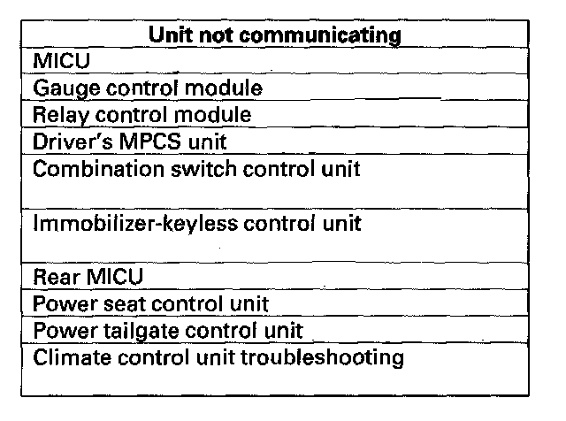

Troubleshooting - B-CAN System Diagnosis Test Mode B
Troubleshooting - B-CAN System Diagnosis Test Mode BPerform this diagnosis if any of the control units are not communicating (Not Available is displayed in the HDS) as found by the B-CAN System Diagnosis Test Mode A.
1. Using the HDS, select the system that has the symptom from BODY ELECTRICAL.
2. Select DTCs, and then check for loss of communication DTCs. Refer to loss of communication DTC cross reference chart.
Are any loss of communication DTCs indicated?
YES - Go to step 3.
NO - Replace the MICU.

3. Perform the input test for the unit not communicating with the HDS.
NOTE: Troubleshoot Rear MICU loss of communication DTCs before troubleshooting AcuraLink control unit (XM receiver) the power tailgate control unit, and the power seat control unit DTC.